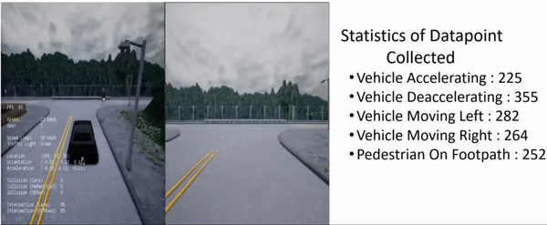

Download Event Based Vehicle Activity Dataset
We introduce the first very large vehicle activity dataset for event and frame-based cameras. This dataset is composed of both synthetic and real-world dataset with more than 68hours of automotive recordings acquired with a 346 x 260 pixels DVS event camera. It contains open roads and very diverse driving scenarios, ranging from urban, highway, suburbs and countryside scenes, as well as different weather and illumination conditions. We also present a class of efficient model called n-EAR for on-board vehicle activity recognition on autonomous vehicles. The core decision making in a self driving car relies heavily on the relative position of the vehicle with respect to its surroundings. We introduce two novel techniques, first an event based attention sampling technique that leverages on the bio-inspired event data to adaptively sample the frame-based data. Secondly, a two-stream architecture that that efficiently trade off between latency and accuracy. We bring these two ideas together to build the n-EAR. We also present a modified carla simulator to generate data that can be used for solving the challenges faced in autonomous driving vehicles.

DATASET CONTENT
- The dataset is split between train, test and val folders.
- Files consist of recordings that were cut from longer recording sessions. Cuts from a single recording session are all in the same training split.
- Each dat file is a Numpy npz file in which events are encoded using 4 bytes (unsigned int32) for the timestamps and 4 bytes (unsigned int32) for the data, encoding is little-endian ordering.
- The data is composed of 14 bits for the x position, 14 bits for the y position and 1 bit for the polarity (encoded as -1/1).
- Frame based clips are also saved in npz format
- Odometery in GoPro metadata format
- open roads and very diverse driving scenarios, ranging from urban, highway, suburbs and countryside scenes
- 5 Different weather and illumination conditions
- Annotations use the numpy format and can simply be loaded form python using numpy boxes = np.load(path)
- Boxes have the following fields
- x abscissa of the top left corner in pixels
- y ordinate of the top left corner in pixels
- w width of the boxes in pixel
- h height of the boxes in pixel
- ts timestamp of the box in the sequence in microseconds
- class_id 0 for cars and 1 for pedestrians
- activity accelerating, deaccelerating, Turing Right, Turning Left, Pedestrians on Footpath, Pedestrians on Road
- Alongside the dataset, we also release sample code in Python to conveniently read the events and annotations: Github repository
- For more information on how the dataset was created, please refer to the paper.
n-EAR Dataset and Annotation Specififcations
Synthetic Data
CARLA Simulator Datapoint Statistics
Actvity Labels

Real-World Data
Frame-Based Data with Odometry

Activity Labels on Frame-Based Data

Activity Labels on Event-Based Data

CITING n-EAR Acitivity Dataset
FYI! If the links are broken please email to neuronics@iisc.ac.in
CAUTION If dataset is used in you research, dont forget to cite us!!! Please fill the below form to recieve the resilio sync download link
n-EAR paper Once uploaded to arXiv we can cited her